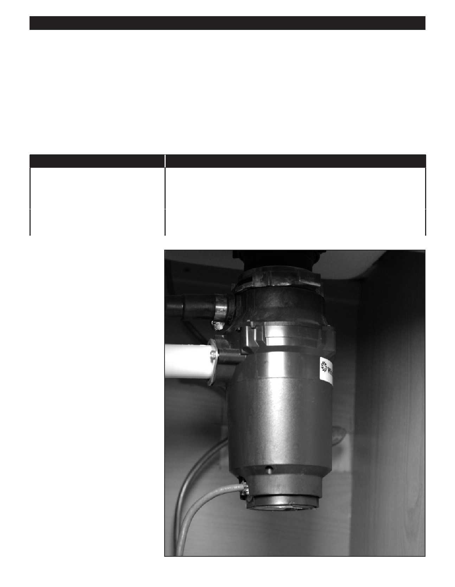

PA RT I C I PA N T R E S O U R C E G U I D E
Fixing a Leaky Garbage Disposal (continued)
How-to Steps: Fixing a Leak at the Sink Flange
1. Turn off power to the disposal at the main service panel.
2. Verify the power is off by flipping the disposal switch.
3. Underneath the sink, turn the disposal clockwise to remove it from its support ring or mounting bracket. (Some units
must be unscrewed from their support.)
4. Tighten the bolts to the mounting bracket.
If
Then
The bolts are loose
You may have found the problem.
1. Remount the disposal unit.
2. Turn on the water and then the disposal to check for leaks once again.
The bolts are tight
The problem may be caused by faulty plumber's putty. Continue with the
steps below.
5. Loosen the bolts and push the sink
flange slightly above the sink.
6. Put plumber’s putty evenly into the
area between the sink and the sink
flange.
7. Tighten the bolts.
8. Clean away the excess putty.
9. Remount the disposal unit.
10. Turn on the water.
11. Turn on the power to the
disposal at the service panel.
12. Check for leaks.
45